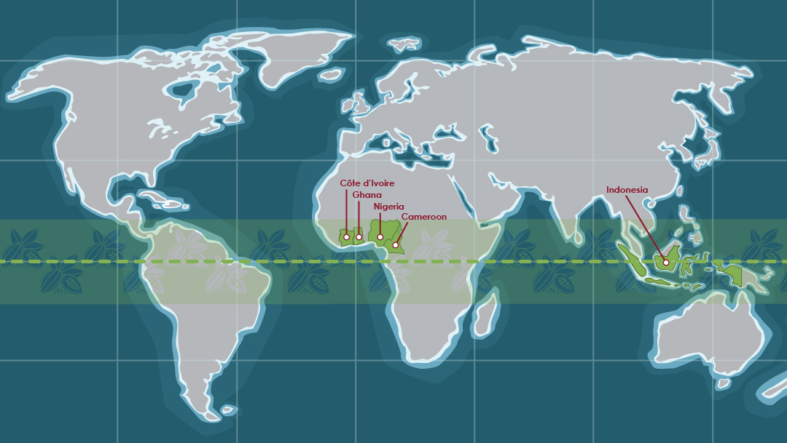
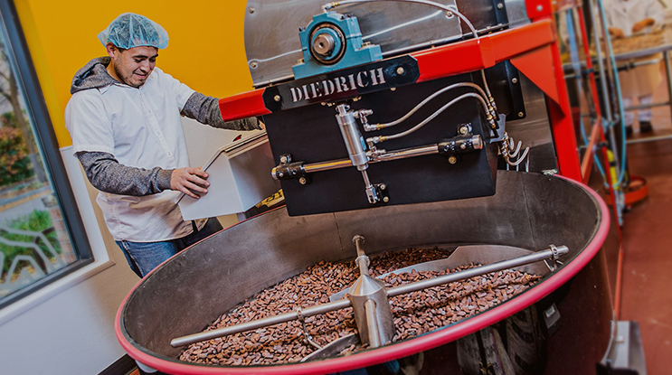
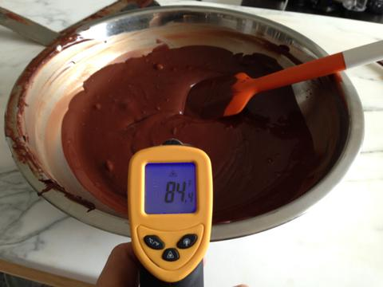
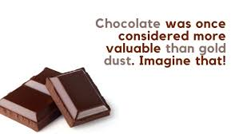
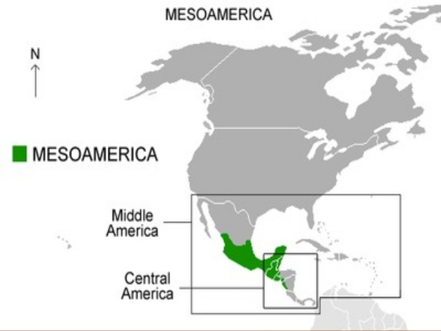
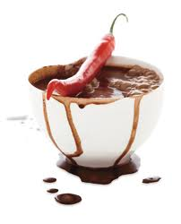
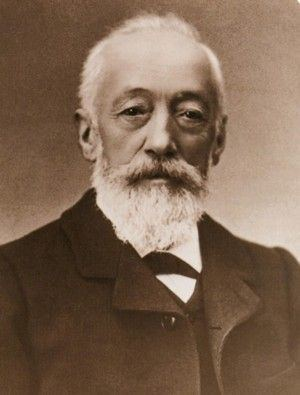
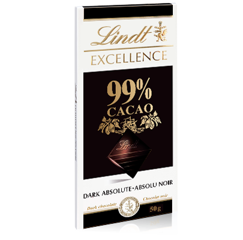
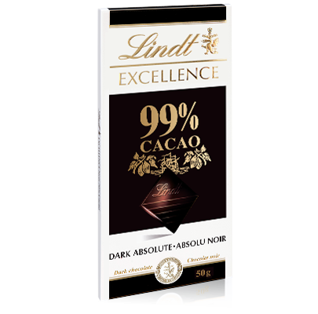

"Never underestimate the power of chocolate."
Table of Contents
What is chocolate?
How is chocolate made?
History of chocolate?
Different types of chocolate.
Health benefits of chocolate.
Chocolate is the most popular sweet treat in the world. According to the World Cocoa Foundation, more than 3 million tons of cocoa beans are consumed by people around the world. Chocolate was once considered more valuable than gold dust.

Chocolate is made from the fruit of Theobroma Cacao, which means “food of the gods”. The tree is native to native to the tropical regions of America. Cacao trees bear fruit, known as cacao pods are full of up to 50 beans. These beans are then crushed, their fats and solid are remaining. The fat is called cocoa butter and the solids are ground into cocoa butter.
 The shape of cocoa pod looks similar to a football, and it grows straight out from the branches.
The shape of cocoa pod looks similar to a football, and it grows straight out from the branches.
Before 1600, chocolate only existed in Mesoamerica. The people of Mesoamerica had learned to prepare the beans of the native cacao tree. The earliest records show that the beans were grounded and mixed with cornmeal and chilli peppers to create a bitter drink.
 The word chocolate is derived from the Mayan word ‘chocol’, meaning hot drink. The Mesoamericans believed that the cocoa was a heavenly food gifted to humans by a serpent god. Aztec used cacao beans as currency and drank chocolate at royal feasts, and even gave it to soldiers as a reward for success in battle and used it in rituals.

In 1519, the Spanish arrived in Mesoamerica, the Aztec king gave ‘Hernán Cortes’, a Spanish Conquistador and his fellow men 50 jugs of the drink. The colonists returned with shipments of the bean to Spain, where it quickly became popular.

Throughout the 18th century, chocolate was a fashionable drink for rich Europeans. The fashionable drink was time-consuming to produce on a large scale.
The Mesoamericans were forced to farm most of the cacao plantations by the Spanish colonizers. Many indigenous people began to die from diseases brought by Europeans, this resulted in enslaved Africans being brought to make up the label shortages. They planted, maintained and harvested cacao beans throughout the Caribbean, South America and Central America.

But this all changed in 1828 when Coenraad Van Houten of Amsterdam created the cocoa press. His invention separated cocoa butter from chocolate liquor. This led to the creation of cocoa powder and solid chocolate.
In 1847, a Swiss chocolatier named Daniel Peter invented milk chocolate by adding powdered milk to the mix.
By 1900, chocolate was no longer considered a luxury item but had become a treat for the public.
Chocolate-you know you love it but do you know the different kinds of chocolate?
 

Chocolate comes from a plant that is rich in phytonutrients; they act as antioxidants and provide many additional benefits. The higher the cocoa content, as in dark chocolate, the more beneficial it is for you.